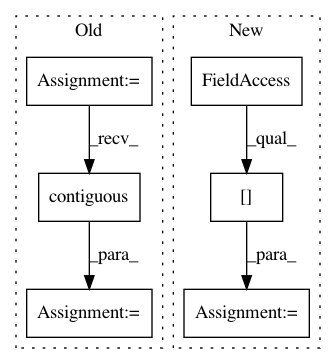

a7a12d157766b69cf4b1ddbb5fcdacfe485dc6fa,gpytorch/kernels/grid_interpolation_kernel.py,GridInterpolationKernel,_compute_grid,#GridInterpolationKernel#Any#Any#,116
Before Change
def _compute_grid(self, inputs, batch_dims):
batch_size, n_data, n_dimensions = inputs.size()
if batch_dims == (0, 2):
inputs = inputs.view(inputs.size(0), inputs.size(1), -1, 1)
inputs = inputs.transpose(1, 2).contiguous()
batch_size = batch_size * inputs.size(1)
n_dimensions = n_dimensions // inputs.size(1)
inputs = inputs.view(batch_size * n_data, n_dimensions)
interp_indices, interp_values = Interpolation().interpolate(self.grid, inputs)
interp_indices = interp_indices.view(batch_size, n_data, -1)
interp_values = interp_values.view(batch_size, n_data, -1)
return interp_indices, interp_values
After Change
if batch_dims == (0, 2):
inputs = inputs.unsqueeze(0).transpose(0, -1)
n_dimensions = 1
batch_shape = inputs.shape[:-2]
inputs = inputs.contiguous().view(-1, n_dimensions)
interp_indices, interp_values = Interpolation().interpolate(self.grid, inputs)
interp_indices = interp_indices.view(*batch_shape, n_data, -1)
In pattern: SUPERPATTERN
Frequency: 3
Non-data size: 6
Instances
Project Name: cornellius-gp/gpytorch
Commit Name: a7a12d157766b69cf4b1ddbb5fcdacfe485dc6fa
Time: 2019-04-03
Author: gpleiss@gmail.com
File Name: gpytorch/kernels/grid_interpolation_kernel.py
Class Name: GridInterpolationKernel
Method Name: _compute_grid
Project Name: open-mmlab/mmdetection
Commit Name: a6236b789b8f4e2e66c8379199f40ecef9afce06
Time: 2020-04-21
Author: 40779233+ZwwWayne@users.noreply.github.com
File Name: mmdet/core/anchor/anchor_generator.py
Class Name: AnchorGenerator
Method Name: valid_flags
Project Name: NVIDIA/sentiment-discovery
Commit Name: ef87f1a071c6b8ca5607874a1a7d77d8a1ab2821
Time: 2018-11-19
Author: raulp@nvidia.com
File Name: model/sentiment_classifier.py
Class Name: SentimentClassifier
Method Name: forward